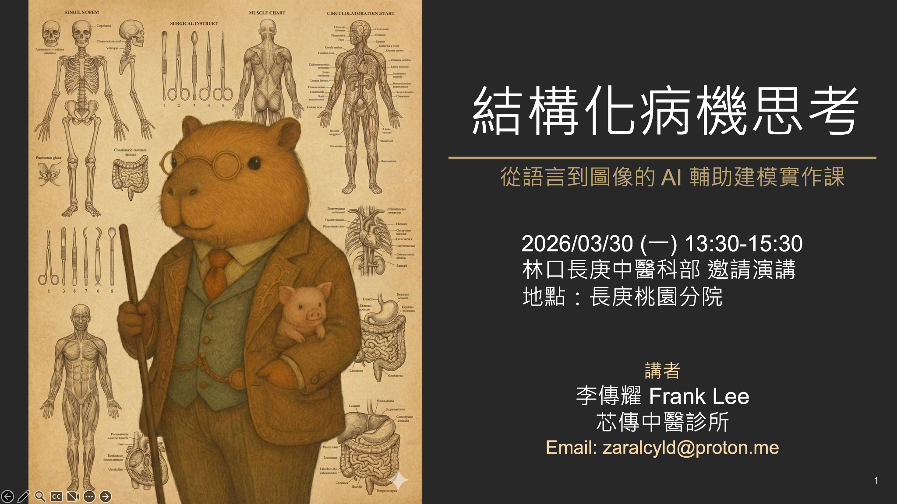

結構化病機思考
從病案到 AI 視覺化的系統性訓練
引子與學習地圖

為什麼要結構化病機思考？
除了 AI，還有 AI 以外的東西，那就是人類的思維模式：
- 文字與圖像，用於敘事紀錄與溝通
結構化病機思考的目的，根據文件內容，主要有兩點：
- 人類的思維模式：除了應用於 AI，結構化思考也針對人類的思維模式進行優化。
- 敘事紀錄與溝通：利用文字與圖像（例如：圖解步驟、邏輯流程圖、醫學插畫等）來進行更精準的敘事紀錄和溝通。
結構化病機思考是為了建立一套清晰、系統化的方法，能同時協助人類（整理思維、提高診斷準確性）與 AI（作為提示詞精準控制的基礎），並將複雜的醫學知識透過「文字與圖像」的方式高效傳達與紀錄。
今日的學習大綱

| 模組 | 主題 | 核心技能 |
|---|---|---|
| Module 1 | 古今醫案按的圖解步驟 | Infographic 視覺化 |
| Module 2 | 病因病機的邏輯實現 | Mermaid 流程圖 |
| Module 3 | 多重文字精準控制的技巧 | YAML 格式調整庫 |
| Module 4 | 製作醫學解剖插畫圖片 | META-Prompt |
Module 1 — 古今醫案按的圖解步驟
學習將中醫古今醫案的複雜文字內容，轉化為易於理解的資訊圖表（Infographic）進行視覺化呈現。
Module 2 — 病因病機的邏輯實現
練習以病因病機的角度拆解醫案，並將其邏輯關係透過彩色 Mermaid 語法輸出為視覺化的流程圖。
Module 3 — 多重文字精準控制的技巧
學習觀察和分析圖片的排版、色彩與形式等要素，並將這些控制要素結構化儲存為 YAML 格式的調整庫。
Module 4 — 製作醫學解剖插畫圖片
探索 META-Prompt 的概念，用以穩定地生成具有專業風格和解剖精確度的醫學插畫圖片。
今日學習地圖（Multiagent 的時代）

結構化病機思考是人類成為 Multiagent 系統中最高層次協調者（The Orchestrator）的必備技能。
整份講義教授的 YAML 格式控制、Mermaid 邏輯流程圖、以及 META-Prompt 概念，都是建立一套清晰、系統化的方法，用來精準控制不同的 AI 代理，確保輸出結果能一致、穩定且準確地符合專業醫療意圖。
Human intention in, meaningful context out.
版權宣告
課程內容採 CC BY-NC-ND 4.0 授權（不含 AI 生成圖像）；圖像由 Google Gemini（Imagen 2）生成，依 Google 服務條款使用。
投影片技術框架：frontend-slides，MIT License © 2025 Zara Zhang